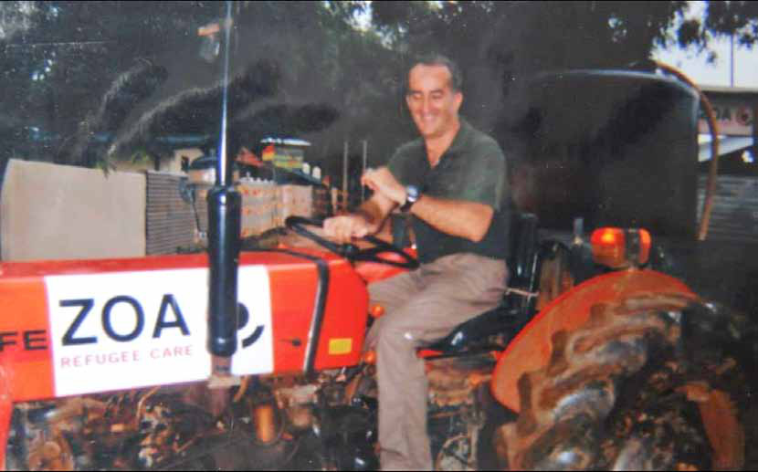
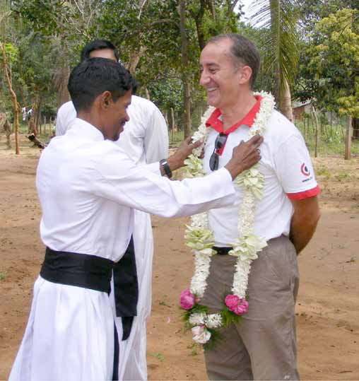
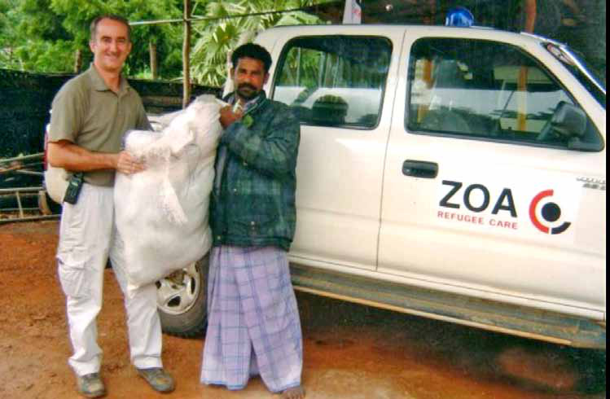
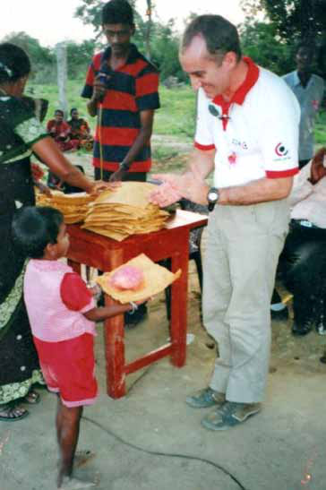

I n early September 2008, as the Sri Lankan Civil War neared its harrowing conclusion, the Sri Lankan government issued a critical directive that would significantly alter the course of the conflict. During one of the most intense phases of the nearly three-decade-long war, all foreign NGOs and United Nations agencies were ordered to evacuate from LTTE-controlled areas. The government cited escalating insecurity and rigorous military operations as reasons, asserting the move was necessary to ensure the safety of international staff.
I n early September 2008, as the Sri Lankan Civil War neared its harrowing conclusion, the Sri Lankan government issued a critical directive that would significantly alter the course of the conflict. During one of the most intense phases of the nearly three-decade-long war, all foreign NGOs and United Nations agencies were ordered to evacuate from LTTE-controlled areas. The government cited escalating insecurity and rigorous military operations as reasons, asserting the move was necessary to ensure the safety of international staff.
Jaffna Monitor hellojaffnamonitor@gmail.com 29 I n early September 2008, as the Sri Lankan Civil War neared its harrowing conclusion, the Sri Lankan government issued a critical directive that would significantly alter the course of the conflict. During one of the most intense phases of the nearly three-decade-long war, all foreign NGOs and United Nations agencies were ordered to evacuate from LTTE-controlled areas. The government cited escalating insecurity and rigorous military operations as reasons, asserting the move was necessary to ensure the safety of international staff. This order drastically changed the humanitarian landscape, creating a significant void in aid delivery and the monitoring of human rights during a crucial time. Amid this dramatic backdrop, Giovanni Porta, the Programme Manager for ZOA Refugee Care operating within LTTE-held regions, made a courageous choice. Defying the evacuation order, Porta was the sole foreign aid worker who decided to stay behind for several extra days, placing humanitarian needs above his own safety. Now residing in a Southeast Asian country and working with another NGO, Porta has granted the Jaffna Monitor an exclusive interview. This conversation comes as we mark the 15th anniversary of the brutal conclusion of the Sri Lankan Civil War on May 18, 2009. Here, we present key insights from our discussion with Porta, reflecting on his experiences and the broader implications of the conflict's end. By: Our Reporter

Jaffna Monitor
hellojaffnamonitor@gmail.com
30
What motivated you
to remain in LTTE-
controlled areas
despite the Sri
Lankan government's
directives, especially
as the conflict
escalated and your
safety could not be
guaranteed?
Like all other international
aid organizations and
workers, I was instructed to
leave the LTTE-controlled
region. We were given a
mere two weeks, and the
directive was abrupt. In a
way, that order seemed to
demand that I abandon my
local colleagues at ZOA and
the people I had faithfully
served. Leaving felt like
an inappropriate response
to such a rash order. So, I
stayed.
How would you
describe your
relationship with the
LTTE? Some Sinhala
newspapers portrayed
you as an LTTE
sympathizer.
In fact, working with the
LTTE presented significant
challenges. They forcibly abducted my staff for conscription
and ransacked my house. My decision to stay was not driven by
a good relationship with the LTTE, but by a profound sense of
responsibility toward my local staff. I believed that abandoning
them would be wrong, as they were caught between the Sri
Lankan government and the LTTE. Before leaving, I wanted to
ensure that my staff were safely hidden in a jungle area, equipped
with all the basic necessities. Additionally, as the security
coordinator for all NGOs, I felt an immense responsibility
toward the local workers employed by foreign NGOs. I did
everything in my power to protect and support them during
those critical times.
Why did the LTTE ransack your house?
The LTTE had suspicions that I might be an agent for the Sri
Lankan government or some other foreign entity. I was not
willing to make certain compromises with the LTTE, and I
refused to provide them with some materials that we had, which
infuriated them. Additionally, I travelled to areas within the

Jaffna Monitor hellojaffnamonitor@gmail.com 31 LTTE-held territories where others could hardly imagine going. All these factors led them to believe I might be a spy or an agent. One day, the LTTE ransacked my house while I was not there, but civilians informed me that high-ranking officers from the LTTE's intelligence wing conducted the search. When I found out, my house was completely ransacked. In response, I went to the LTTE office, which was responsible for overseeing NGOs. I took my laptop with me, confronted them, and said, "Here is the laptop; I know you were looking for this. Take it and check." They had no response to my challenge. How many days did you stay in the LTTE-held area after you were ordered to leave? I stayed for about 10 days. One day, my office in Colombo called me and relayed a message from the Defense Ministry, warning that if I did not leave, there could be severe consequences for my organization, possibly leading to the shutdown of all its activities in Sri Lanka. Considering the potential impact on the organization and its mission, I decided to leave the LTTE-held area. How did you leave the LTTE-held area? I travelled to Muhamalai, where my mission had arranged for someone to pick me up. Upon arrival, I was informed that the army commander in charge of Muhamalai wanted to meet with me. During our conversation, he asked, both firmly and politely, why I had stayed in the LTTE-held area despite the government's order to evacuate. I explained that I was not willing to abandon my local workers. Meanwhile, some Sinhala newspapers had

Jaffna Monitor hellojaffnamonitor@gmail.com 32 labelled me pro-LTTE and even accused me of training LTTE fighters. Despite my desire to continue working for the people of Sri Lanka, my mission grew concerned that the negative press could lead to attacks against me. Eventually, I was informed that my visa had been revoked, and I was given only five days to leave the country. I wrote a very polite letter to the then Defense Secretary, Gotabaya Rajapaksa, explaining my reasons for not being able to leave immediately. However, I later learned from my Sri Lankan friends that Gotabaya had ordered my expulsion. There were no interrogations, and I was able to leave the country peacefully. You mentioned the forced enlistment by the LTTE. Could you elaborate on that? The policy of the LTTE at the time I was in their territory was to require one member from each family to join their forces, regardless of gender. They forcefully enlisted everyone, and the majority of people did not want their daughters and sons to enlist. Some of the youths that the LTTE enlisted were the sole breadwinners of their families. One day, I received a message that one of my staff, a young girl, had been abducted by the LTTE's abduction team while she was at the market buying groceries for our NGO. I immediately went to the location, where I found a group of LTTE members surrounding her. I approached the chief of the group and asserted that she was under my supervision and they could not take her away. They were surprised by my opposition, as they rarely encountered resistance. They called their superior, and eventually, I was able to take her back with me. She was then forced to stay within our compound for a month. One day, the LTTE tried to enter our compound to take her away. After I left, I learned that the LTTE had abducted her again, but thankfully, she survived the war and is alive today. What war crimes did you observe committed by the Sri Lankan Government? There were several instances. For example, the army's deep penetration unit, known as the Long Range Reconnaissance Patrol (LRRP), planted a claymore mine that targeted a van full of civilians; many civilians died, and I witnessed their bodies. They also bombed my house. Additionally, I witnessed numerous reckless aerial bombings that contributed to significant civilian casualties. These actions raised serious concerns about violations of international humanitarian law.
